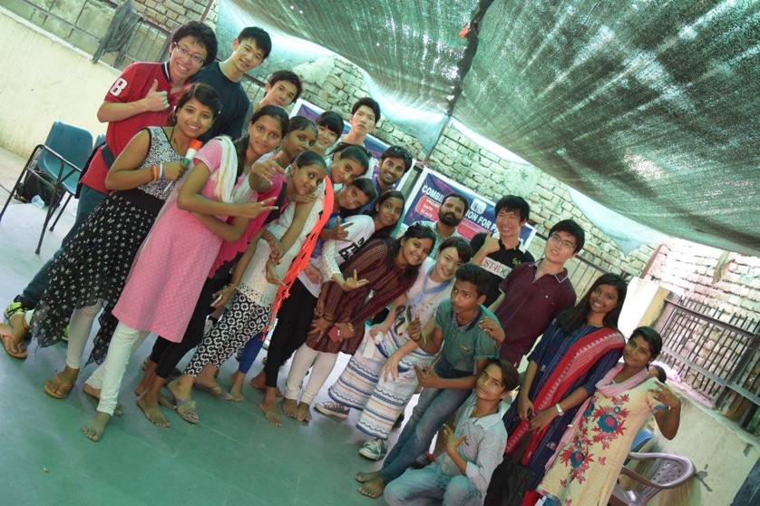
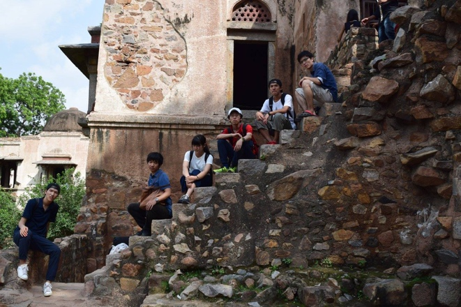
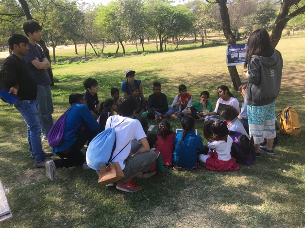
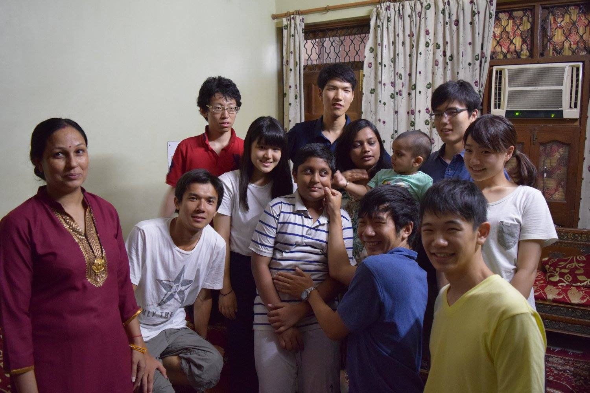

「インド」についてどのようなイメージを持っていますか？
インドについて、プラスのイメージがあるとすれば、やはり経済成長率の高さでしょう。15年度の経済成長率は通年で7.6%となっており、中国の成長率6.9%を上回り、主要国中でトップとなっております。
一方で、マイナスな面も多いのは事実です。やはり、インドも急速な発展の陰に、多くの深刻な問題を抱えています
みなさんのインドに対するイメージとしても、経済発展が進んでいるというよりも、「汚い」「犯罪が多い」「カースト制度が厳しい」というイメージの方が強いのではないでしょうか。また、そうしたイメージゆえに、インドにはあまり行きたいとは思えないという人も多いでしょう。

私たちのチームは、このように多くの問題要素を抱える国において、自分たちに扱うことのできるものを見出し、プロジェクトを作り、ジャワーハルラール・ネルー大学（JNU）の学生とともに、それを実行するということをしています。
私たちのチームは、MISの中で最も新しいチームであり、昨年の夏にMISとして初めてインドに上陸しました。その際には、「女性問題」「貧困問題」「環境問題」といったテーマでフィールドワークを行い、それに基づき、今年の春にはスラムの子どもたちとともに「環境」について考えるというプロジェクトを行ってきました。今年の夏にはより大きなプロジェクトをしようと計画しています。


私たちのチームは、MISの中で最も新しいチームであるため、様々なことを模索しながら進めています。まだ、チームを作っていくという段階にあります。そのため、チームとして、様々なことに挑戦しやすい環境にあります。
是非とも、一緒に道を切り開いていきましょう。
